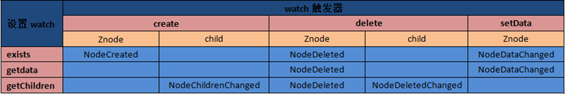
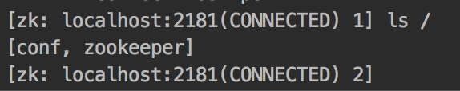
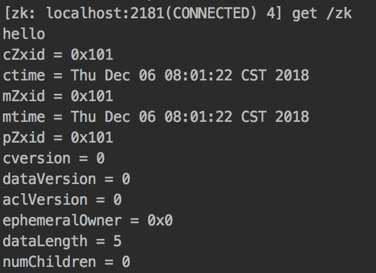
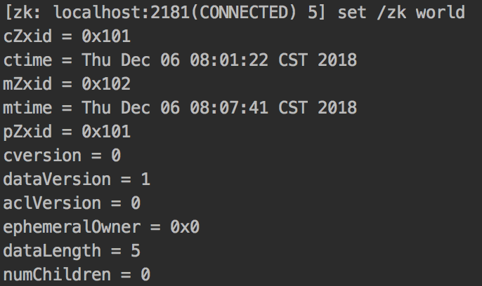
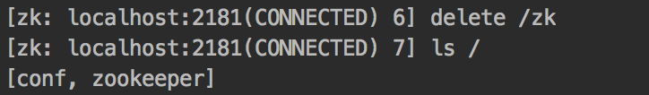
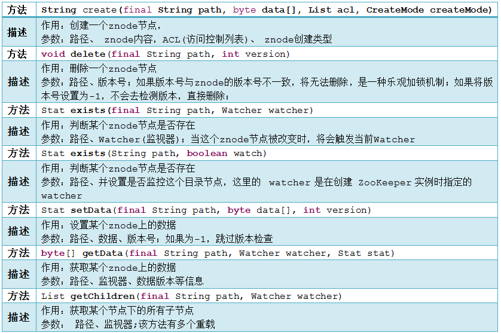

zookeeper是一种为分布式应用所设计的高可用、高性能且一致的开源协调服务，主要可用来实现分布式锁、配置维护、分布式消息队列、分布式通知/协调等。
zookeeper设计了一种全新的数据结构(Znode)，并且在Znode上定义了一些原语（关于该数据结构的一些操作）。因为zookeeper是工作在一个分布式的环境下，所以还需要一个通知机制(watch机制)来将消息通过网络发送给分布式应用程序。总结一下，zookeeper所提供的服务主要是通过：Znode数据结构+原语+watch机制，三个部分来实现的，那么接下来就从这三个方面来简单介绍一下zookeeper。
源码：https://github.com/chentianming11/zookeeper-demo
zookeeper数据模型
Znode
zookeeper拥有一个层次的命名空间，这个和标准的文件系统非常相似，如下图所示。

从图中我们可以看出，zookeeper的数据模型在结构上和标准文件系统的非常相似，都是采用树形层次结构，zookeeper树中的每个节点被称为—Znode。和文件系统的目录树一样，zookeeper树中的每个节点可以拥有子节点。当然，也有不同之处：
引用方式
Zonde通过路径引用，如同Unix中的文件路径。路径必须是绝对且唯一的，因此他们必须由斜杠字符来开头，并且每一个路径只有一个表示。
Znode结构
zookeeper命名空间中的Znode，兼具文件和目录两种特点。既像文件一样维护着数据、元信息、ACL、时间戳等数据结构，又像目录一样可以作为路径标识的一部分。图中的每个节点称为一个Znode。 每个Znode由3部分组成:
stat：状态信息, 描述该Znode的版本, 权限等信息；
data：与该Znode关联的数据；
children：该Znode下的子节点
zookeeper虽然可以关联一些数据，但并没有被设计为常规的数据库或者大数据存储，相反的是，它用来管理调度数据，比如分布式应用中的配置文件信息、状态信息、汇集位置等等。这些数据的共同特性就是它们都是很小的数据，通常以KB为大小单位。zookeeper的服务器和客户端都被设计为严格检查并限制每个Znode的数据大小至多1M，但常规使用中应该远小于此值。
数据访问
zookeeper中的每个节点存储的数据要被原子性的操作。也就是说读操作将获取与节点相关的所有数据，写操作也将替换掉节点的所有数据。另外，每一个节点都拥有自己的ACL(访问控制列表)，这个列表规定了用户的权限，即限定了特定用户对目标节点可以执行的操作。
节点类型
zookeeper中的节点有两种，分别为临时节点和永久节点。节点的类型在创建时即被确定，并且不能改变。
- 临时节点：该节点的生命周期依赖于创建它们的会话。一旦会话(Session)结束，临时节点将被自动删除，当然可以也可以手动删除。虽然每个临时的Znode都会绑定到一个客户端会话，但他们对所有的客户端还是可见的。另外，zookeeper的临时节点不允许拥有子节点。
- 永久节点：该节点的生命周期不依赖于会话，并且只有在客户端显示执行删除操作的时候，他们才能被删除。
顺序节点
当创建Znode的时候，用户可以请求在zookeeper的路径结尾添加一个递增的计数。这个计数对于此节点的父节点来说是唯一的，它的格式为”%10d”(10位数字，没有数值的数位用0补充，例如”0000000001”)。当计数值大于232-1时，计数器将溢出。
监视器
客户端可以在节点上设置watch，我们称之为监视器。当节点状态发生改变时(Znode的增、删、改)将会触发watch所对应的操作。当watch被触发时，zookeeper将会向客户端发送且仅发送一条通知，因此watch只能被触发一次，这样可以减少网络流量。
zookeeper中的时间
zookeeper有多种记录时间的形式，其中包含以下几个主要属性：
Zxid
致使zookeeper节点状态改变的每一个操作都将使节点接收到一个Zxid格式的时间戳，并且这个时间戳全局有序。也就是说，也就是说，每个对节点的改变都将产生一个唯一的Zxid。如果Zxid1的值小于Zxid2的值，那么Zxid1所对应的事件发生在Zxid2所对应的事件之前。实际 上，zookeeper的每个节点维护者三个Zxid值，为别为：cZxid、mZxid、pZxid。
- cZxid：节点创建时间所对应的Zxid格式时间戳
- mZxid：节点最近一次修改的时间所对应的Zxid格式时间戳
- pZxid：子节点（或该节点）的最近一次创建/删除的时间所对应的Zxid格式时间戳
实现中Zxid是一个64为的数字，它高32位是epoch用来标识leader关系是否改变，每次一个leader被选出来，它都会有一个 新的epoch。低32位是个递增计数。
版本号
对节点的每一个操作都将致使这个节点的版本号增加。每个节点维护着三个版本号，他们分别为：
- version：节点数据版本号
- cversion：子节点版本号
- aversion：节点所拥有的ACL版本号
zookeeper节点属性
| 属性 | 描述 |
|---|---|
| cZxid | 节点创建时间所对应的Zxid格式时间戳 |
| mZxid | 节点最近一次修改的时间所对应的Zxid格式时间戳 |
| pZxid | 子节点（或该节点）的最近一次创建/删除的时间所对应的Zxid格式时间戳 |
| ctime | 节点创建时间 |
| mtime | 节点最近修改时间 |
| version | 节点数据版本号 |
| cversion | 子节点版本号 |
| aversion | 节点所拥有的ACL版本号 |
| ephemeralOwner | 如果此节点为临时节点，这个值为会话ID，否则，值为0 |
| dataLength | 节点数据长度 |
| numChildren | 子节点数量 |
zookeeper节点操作
| 操作 | 描述 |
|---|---|
| create | 创建Znode(父节点必须存在) |
| delete | 删除Znode(没有子节点) |
| exists | 测试Znode是否存在，并获取它的元数据 |
| getACL/setACL | 为Znode获取/设置ACL |
| getChildren | 获取Znode所有子节点列表 |
| getData/setData | 获取/设置Znode相关数据 |
| sync | 使客户端的Znode视图与zookeeper同步 |
更新zookeeper操作是有限制的。delete或setData必须明确要更新的Znode的版本号，我们可以调用exists找到。如果版本号不匹配，更新将会失败。
更新zookeeper操作是非阻塞式的。因此客户端如果失去了一个更新(由于另一个进程在同时更新这个Znode)，他可以在不阻塞其他进程执行的情况下，选择重新尝试或进行其他操作。
watch触发器
zookeeper可以为所有的读操作设置watch，这些读操作包括：exists()、getChildren()及getData()。watch事件是一次性的触发器，当watch的对象状态发生改变时，将会触发此对象上watch所对应的事件。watch事件将被异步地发送给客户端，并且zookeeper为watch机制提供了有序的一致性保证。理论上，客户端接收watch事件的时间要快于其看到watch对象状态变化的时间。
watch类型
- 数据watch(data watches)：getData和exists负责设置数据watch;
- 孩子watch(child watches)：getChildren负责设置孩子watch。
watch注册与处触发

exists操作上的watch，在被监视的Znode创建、删除或数据更新时被触发。getData操作上的watch，在被监视的Znode删除或数据更新时被触发。在被创建时不能被触发，因为只有Znode一定存在，getData操作才会成功。getChildren操作上的watch，在被监视的Znode的子节点创建或删除，或是这个Znode自身被删除时被触发。可以通过查看watch事件类型来区分是Znode，还是他的子节点被删除：NodeDelete表示Znode被删除，NodeDeletedChanged表示子节点被删除。
zookeeper的简单操作
下载zookeeper：https://downloads.apache.org/zookeeper/zookeeper-3.5.9/apache-zookeeper-3.5.9-bin.tar.gz
shell操作
进入zookeeper目录，在conf目录下，新建一个名为zoo.cfg的文件，其中内容如下：
1 | # 服务器与客户端之间交互的基本时间单元（ms） |
启动zookeeper服务：./bin/zkServer.sh start;
在启动Zookeeper服务之后，输入./bin/zkCli.sh -server localhost:2181，连接到Zookeeper服务。
连接成功之后，系统会输出Zookeeper的相关环境及配置信息，并在屏幕输出“welcome to Zookeeper！”等信息。
ls path: 列出指定路径节点下包含的子节点信息，例如ls /
create path data: 创建一个路径节点。例如create /zk hello
get path: 获取指定路径节点的信息
set path data: 给指定路径节点设置数据
delete path: 删除指定路径节点


Zookeeper的API的简单使用
Zookeeper API共包含五个包，分别为：
- org.apache.zookeeper
- org.apache.zookeeper.data
- org.apache.zookeeper.server
- org.apache.zookeeper.server.quorum
- org.apache.zookeeper.server.upgrade
其中org.apache.zookeeper，包含Zookeeper类，他是我们编程时最常用的类文件。这个类是Zookeeper客户端的主要类文件。如果要使用Zookeeper服务，应用程序首先必须创建一个Zookeeper实例， 这时就需要使用此类。一旦客户端和Zookeeper服务建立起了连接，Zookeeper系统将会给次连接会话分配一个ID值，并且客户端将会周期性的 向服务器端发送心跳来维持会话连接。只要连接有效，客户端就可以使用Zookeeper API来做相应处理了。

curator使用详解
Apache Curator是一个比较完善的zookeeper客户端框架，通过封装的一套高级API，简化了ZooKeeper的操作，因此在实际应用中都是使用Apache Curator来操作zookeeper的。通过查看官方文档，可以发现Curator主要解决了三类问题：
- 封装
ZooKeeper client与ZooKeeper server之间的连接处理。 - 提供了一套Fluent风格的操作API。
- 提供ZooKeeper各种应用场景(recipe， 比如：分布式锁服务、集群领导选举、共享计数器、缓存机制、分布式队列等)的抽象封装。
引入依赖
1 | <dependency> |
创建会话
使用静态工程方法创建客户端
1 | // 重试策略 |
newClient静态工厂方法包含四个主要参数：
| 参数名 | 说明 |
|---|---|
| connectionString | 服务器列表，格式host1:port1,host2:port2,… |
| retryPolicy | 重试策略,内建有四种重试策略,也可以自行实现RetryPolicy接口 |
| sessionTimeoutMs | 会话超时时间，单位毫秒，默认60000ms |
| connectionTimeoutMs | 连接创建超时时间，单位毫秒，默认60000ms |
使用Fluent风格的Api创建客户端
1 |
|
创建包含隔离命名空间的客户端
为了实现不同的Zookeeper业务之间的隔离，需要为每个业务分配一个独立的命名空间（NameSpace），即指定一个Zookeeper的根路径（官方术语：为Zookeeper添加“Chroot”特性）。例如（下面的例子）当客户端指定了独立命名空间为“/base”，那么该客户端对Zookeeper上的数据节点的操作都是基于该目录进行的。通过设置Chroot可以将客户端应用与Zookeeper服务端的一课子树相对应，在多个应用共用一个Zookeeper集群的场景下，这对于实现不同应用之间的相互隔离十分有意义。
1 | RetryPolicy retryPolicy = new ExponentialBackoffRetry(1000, 3); |
当客户端创建成功，直接调用start()方法即可启动客户端。
数据节点操作
创建数据节点
Zookeeper的节点创建模式：
- PERSISTENT：持久化节点
- PERSISTENT_SEQUENTIAL：持久化顺序节点
- EPHEMERAL：临时节点
- EPHEMERAL_SEQUENTIAL：临时顺序节点
创建一个节点，初始内容为空
1 | client.create().forPath("/path"); |
如果没有设置节点属性，节点创建模式默认为持久化节点，内容默认为空。
创建一个节点，附带初始化内容
1 | client.create().forPath("/path2", "test1".getBytes()); |
创建一个节点，指定创建模式（临时节点），内容为空
1 | client.create().withMode(CreateMode.EPHEMERAL).forPath("/path3"); |
创建一个节点，指定创建模式（临时节点），附带初始化内容
1 | client.create().withMode(CreateMode.EPHEMERAL).forPath("/path", "demo".getBytes()); |
创建一个节点，指定创建模式（临时节点），附带初始化内容，并且自动递归创建父节点
1 | client.create() |
creatingParentContainersIfNeeded()接口非常有用，因为一般情况开发人员在创建一个子节点必须判断它的父节点是否存在，如果不存在直接创建会抛出NoNodeException，使用creatingParentContainersIfNeeded()之后Curator能够自动递归创建所有所需的父节点。
删除数据节点
删除一个节点
1 | client.delete().forPath("/path"); |
注意，此方法只能删除叶子节点，否则会抛出异常。
删除一个节点，并且递归删除其所有的子节点
1 | client.delete() |
删除一个节点，强制指定版本进行删除
1 | client.delete() |
删除一个节点，强制保证删除
1 | client.delete() |
上面的多个流式接口是可以自由组合，例如：
1 | client.delete() |
读取数据节点数据
读取一个节点的数据内容
1 |
|
读取一个节点的数据内容，同时获取到该节点的stat
1 | Stat stat = new Stat(); |
更新数据节点数据
更新一个节点的数据内容
1 | client.setData().forPath("/path","data".getBytes()); |
更新一个节点的数据内容，强制指定版本进行更新
1 | client.setData().withVersion(10086).forPath("/path","data".getBytes()); |
检查节点是否存在
1 | Stat stat = client.checkExists().forPath("/path"); |
注意：该方法返回一个Stat实例，不存在，则返回null。
获取某个节点的所有子节点路径
1 | List<String> list = client.getChildren().forPath("/path"); |
该方法的返回值为List
事务
CuratorFramework的实例包含inTransaction()接口方法，调用此方法开启一个ZooKeeper事务. 可以复合create, setData, check, and/or delete 等操作然后调用commit()作为一个原子操作提交。一个例子如下：
1 | client.inTransaction() |
上面提到的创建、删除、更新、读取等方法都是同步的，Curator提供异步接口，引入了BackgroundCallback接口用于处理异步接口调用之后服务端返回的结果信息。BackgroundCallback接口中一个重要的回调值为CuratorEvent，里面包含事件类型、响应吗和节点的详细信息。
CuratorEventType
| 事件类型 | 对应CuratorFramework实例的方法 |
|---|---|
| CREATE | create() |
| DELETE | delete() |
| EXISTS | checkExists() |
| GET_DATA | getData() |
| SET_DATA | setData() |
| CHILDREN | getChildren() |
| SYNC | sync(String,Object) |
| GET_ACL | getACL() |
| SET_ACL | setACL() |
| WATCHED | Watcher(Watcher) |
| CLOSING | close() |
响应码(getResultCode())
| 响应码 | 意义 |
|---|---|
| 0 | OK，即调用成功 |
| -4 | ConnectionLoss，即客户端与服务端断开连接 |
| -110 | NodeExists，即节点已经存在 |
| -112 | SessionExpired，即会话过期 |
1 | ExecutorService executor = Executors.newFixedThreadPool(2); |
注意：如果inBackground()方法不指定executor，那么会默认使用Curator的EventThread去进行异步处理。
缓存
强烈推荐使用ConnectionStateListener监控连接的状态，当连接状态为LOST，curator-recipes下的所有Api将会失效或者过期。
zookeeper原生支持通过注册Watcher来进行事件监听，但是开发者需要反复注册(Watcher只能单次注册单次使用)。Cache是Curator中对事件监听的包装，可以看作是对事件监听的本地缓存视图，能够自动为开发者处理反复注册监听。Curator提供了三种Watcher(Cache)来监听结点的变化。
- Path Cache
Path Cache用来监控一个Znode的子节点. 当一个子节点增加， 更新，删除时， Path Cache会改变它的状态，会包含最新的子节点，子节点的数据和状态，而状态的变更将通过PathChildrenCacheListener通知。
实际使用时会涉及到四个类：
- PathChildrenCache
- PathChildrenCacheEvent
- PathChildrenCacheListener
- ChildData
通过下面的构造函数创建Path Cache:
1 | public PathChildrenCache(CuratorFramework client, String path, boolean cacheData); |
想使用cache，必须调用它的start方法，使用完后调用close方法。 可以设置StartMode来实现启动的模式。
- NORMAL：正常初始化。
- BUILD_INITIAL_CACHE：在调用start()之前会调用rebuild()。
- POST_INITIALIZED_EVENT： 当Cache初始化数据后发送一个
PathChildrenCacheEvent.Type#INITIALIZED事件
addListener(PathChildrenCacheListener listener)可以增加listener监听缓存的变化。getCurrentData()方法返回一个List对象，可以遍历所有的子节点。
设置/更新、移除其实是使用client (CuratorFramework)来操作, 不通过PathChildrenCache操作。
1 | // 创建path cache |
注意：如果new PathChildrenCache(client, PATH, cacheData)中的参数cacheData值设置为false，则示例中的event.getData()将返回null，cache将不会缓存节点数据。
Node Cache
Node Cache与Path Cache类似，Node Cache只是监听某一个特定的节点。它涉及到下面的三个类：
NodeCache：Node Cache实现类NodeCacheListener：节点监听器ChildData： 节点数据
getCurrentData()将得到节点当前的状态，通过它的状态可以得到当前的值。
1 | // 创建NodeCache |
Tree Cache
Tree Cache可以监控整个树上的所有节点，主要涉及到下面四个类：
TreeCache：Tree Cache实现类TreeCacheListener：监听器类TreeCacheEvent：触发的事件类ChildData：节点数据
1 | TreeCache treeCache = new TreeCache(client, PATH); |
Leader选举
在分布式计算中，leader elections是很重要的一个功能。这个选举过程是这样子的： 指派一个进程作为组织者，将任务分发给各节点。 在任务开始前， 哪个节点都不知道谁是leader(领导者)或者coordinator(协调者). 当选举算法开始执行后， 每个节点最终会得到一个唯一的节点作为任务leader. 除此之外，选举还经常会发生在leader意外宕机的情况下，新的leader要被选举出来。
在zookeeper集群中，leader负责写操作，然后通过Zab协议实现follower的同步，leader或者follower都可以处理读操作。
Curator有两种leader选举的recipe,分别是LeaderSelector和LeaderLatch。
LeaderSelector：所有存活的客户端不间断的轮流做Leader。LeaderLatch：一旦选举出Leader，除非有客户端挂掉重新触发选举，否则不会交出领导权。
LeaderLatch
LeaderLatch会和其它使用相同latch path的其它LeaderLatch交涉，然后其中一个最终会被选举为leader，可以通过hasLeadership()方法查看LeaderLatch实例是否leader。
类似JDK的CountDownLatch， LeaderLatch在请求成为leadership会block(阻塞)，一旦不使用LeaderLatch了，必须调用close()方法。 如果它是leader,会释放leadership， 其它的参与者将会选举一个leader。
异常处理： LeaderLatch实例可以增加ConnectionStateListener来监听网络连接问题。 当SUSPENDED或LOST时, leader不再认为自己还是leader。当LOST后连接重连后RECONNECTED, LeaderLatch会删除先前的ZNode然后重新创建一个。LeaderLatch用户必须考虑导致leadership丢失的连接问题。 强烈推荐你使用ConnectionStateListener。
1 | /** |
首先我们创建了10个LeaderLatch，启动后它们中的一个会被选举为leader。 因为选举会花费一些时间，start后并不能马上就得到leader。 通过hasLeadership()查看自己是否是leader， 如果是的话返回true。 可以通过getId()可以得到当前的leader的ID。只能通过close()释放当前的领导权。
LeaderSelector
LeaderSelector使用的时候主要涉及下面几个类：
- LeaderSelector
- LeaderSelectorListener
- LeaderSelectorListenerAdapter
- CancelLeadershipException
类似LeaderLatch,LeaderSelector必须start:leaderSelector.start(); 一旦启动，当实例取得领导权时你的listener的takeLeadership()方法被调用。而takeLeadership()方法只有领导权被释放时才返回。 当你不再使用LeaderSelector实例时，应该调用它的close()方法。
异常处理：LeaderSelectorListener类继承ConnectionStateListener。LeaderSelector必须小心连接状态的改变。如果实例成为leader, 它应该响应SUSPENDED或LOST。 当SUSPENDED状态出现时，实例必须假定在重新连接成功之前, 它可能不再是leader了。 如果LOST状态出现， 实例不再是leader， takeLeadership()方法返回。
重要: 推荐处理方式是当收到SUSPENDED 或LOST时抛出CancelLeadershipException异常。这是会导致LeaderSelector实例中断并取消执行takeLeadership方法的异常。这非常重要， 你必须考虑扩展LeaderSelectorListenerAdapter。 LeaderSelectorListenerAdapter提供了推荐的处理逻辑。
1 | /** |
分布式锁
- 推荐使用
ConnectionStateListener监控连接的状态，因为当连接LOST时你不再拥有锁。 - 分布式的锁全局同步，这意味着任何一个时间点不会有两个客户端都拥有相同的锁。
可重入共享锁—Shared Reentrant Lock
Shared意味着锁是全局可见的，客户端都可以请求锁。Reentrant和JDK的ReentrantLock类似，即可重入。意味着同一个客户端在拥有锁的同时，可以多次获取，不会被阻塞。 它是由类InterProcessMutex来实现。 它的构造函数为：public InterProcessMutex(CuratorFramework client, String path)。
- 通过
acquire()获得锁，并提供超时机制。 - 通过
release()方法释放锁。InterProcessMutex实例可以重用。
zookeeper还提供了可协商的撤销机制，通过为mutex设置撤销监听器来支持撤销mutex, 通过调用makeRevocable(RevocationListener<T> listener)来实现。
如果你请求撤销当前的锁，可以调用Revoker.attemptRevoke(CuratorFramework client, String path)方法,此时RevocationListener将会回调。
代码示例：
首先让我们创建一个模拟的共享资源， 这个资源期望只能单客户端的访问，否则会有并发问题。
1 | /** |
然后创建一个InterProcessMutexDemo类， 它负责请求锁， 使用资源，释放锁这样一个完整的访问过程。
1 | /** |
不可重入共享锁—Shared Lock
这个锁和上面的InterProcessMutex相比，就是少了Reentrant的功能，也就意味着它不能在同一客户端中重入。这个类是InterProcessSemaphoreMutex,使用方法和InterProcessMutex类似
源码见
InterProcessSemaphoreMutexDemo类。
运行后发现，有且只有一个client成功获取第一个锁(第一个acquire()方法返回true)，然后它自己阻塞在第二个acquire()方法，获取第二个锁超时；其他所有的客户端都阻塞在第一个acquire()方法超时并且抛出异常。
这样也就验证了InterProcessSemaphoreMutex实现的锁是不可重入的。